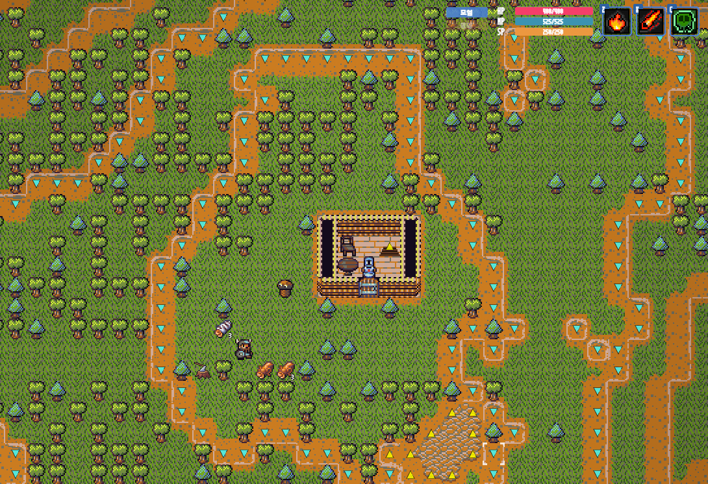

고성능 서버 개발 전문 기지 입니다.
Contact: work@nibblex.co.kr
Master of Magic의 깊이 있는 4X 전략 요소와 Dwarf Fortress의 정교한 시뮬레이션 시스템에, JRPG 스타일의 픽셀 기반 인터페이스와 직관적인 상호작용 방식을 결합한 야심찬 MMORPG 개발 중 입니다. 플레이어는 던전을 탐험하며 몬스터와 싸우는 '모험가'가 될 수도 있고, 도시와 자원을 지휘하는 '전략가'가 될 수도 있습니다. 이 두 역할을 자유롭게 넘나들며, 모험과 지휘가 공존하는 최고의 AA(Adventure & Administrator) 경험을 즐길 수 있도록 신경써서 만들고 있습니다.
